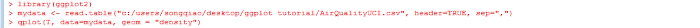
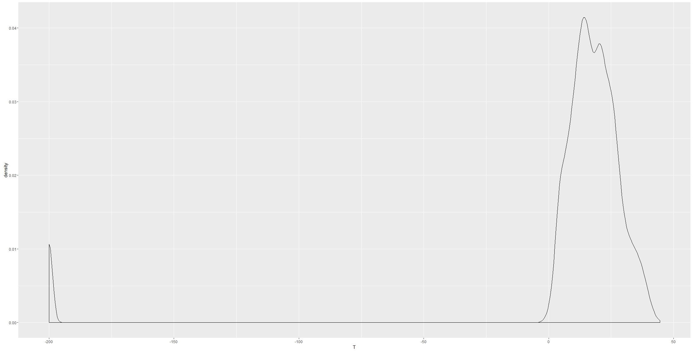
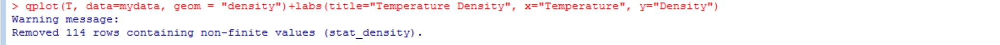
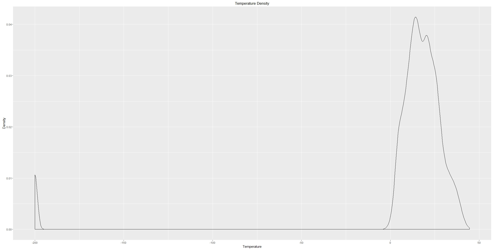

Tutorial 2
Density Smooth
Another way to visualize data is using the density smooth. Density plots are usually a much more effective way to view the distribution of a variable.
We can do this in ggplot by adding a geom argument. Geom stands for geometric object and it is the visual representation of observations.
So for density smooth, we can just include geom = "density" inside the qplot function.
Step 1) Just like Tutorial 1, we have to load and attach the package in R: library(ggplot2)
Step 2) Then you can load the data with the read.table(file, header=, sep=) function. The first argument is the address of the file. The second argument header is a logical value indicating whether the file contains the names of the variables as its first line. The third argument sep is the field sperator character.
Step 3) Now we can create the plot using qplot. Inside qplot(x, data=, geom=), the first attribute is the x coordinate, the data= is the data frame, and the last argument is the geom.


And we have our basic density smooth.
Step 4) We can edit the title, x axis label and y axis label by adding labs(title=, x=, y=).

